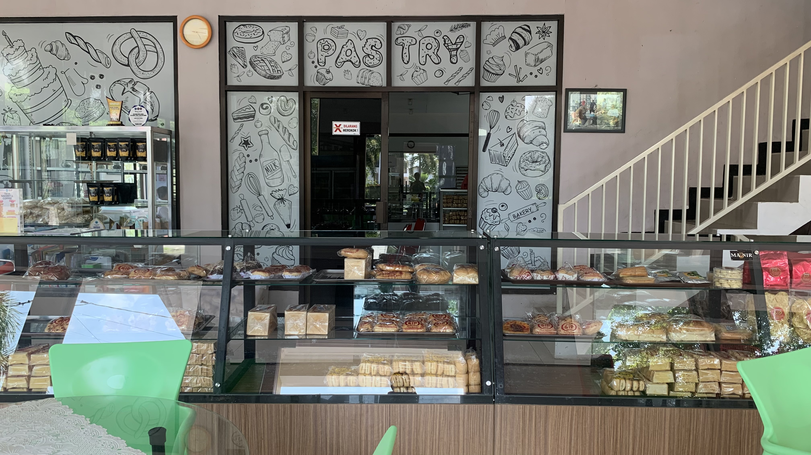

Tentang TEFA Bakery & Coffee
TEFA Bakery & Coffee adalah tempat yang sempurna untuk menikmati kopi dan roti berkualitas premium. Setiap produk kami dibuat dengan penuh perhatian terhadap detail, menggunakan bahan-bahan pilihan terbaik untuk memastikan setiap gigitan dan tegukan memberikan kepuasan maksimal.
Kami juga menyediakan program wisata edukasi untuk siapa saja yang ingin belajar lebih dalam tentang proses pembuatan kopi dan roti secara profesional.

Kunjungi Kami Hari Ini
Rasakan pengalaman tak terlupakan dengan produk-produk berkualitas kami